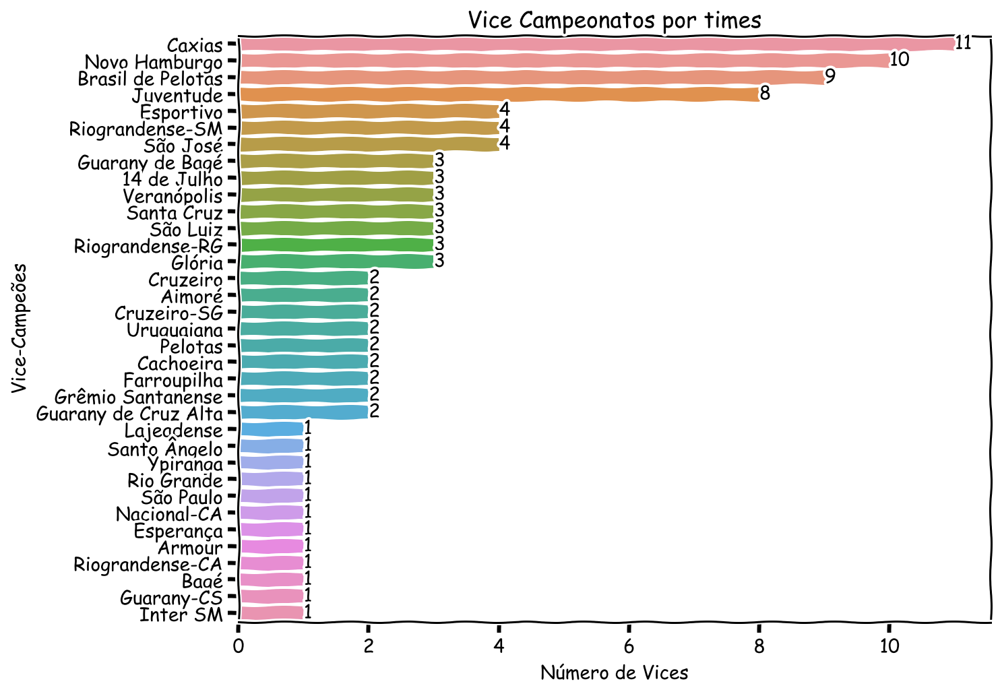
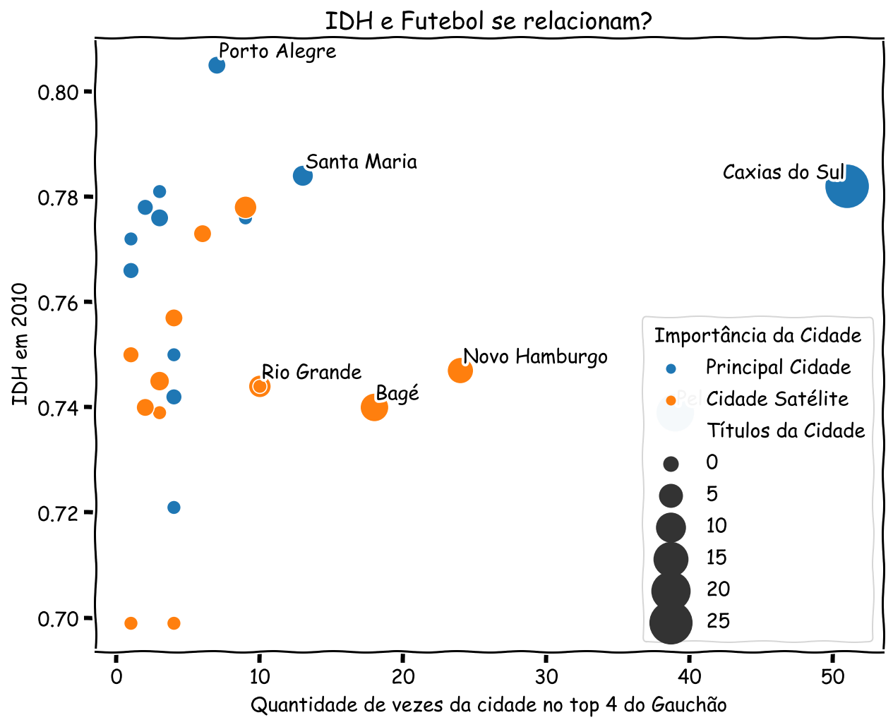
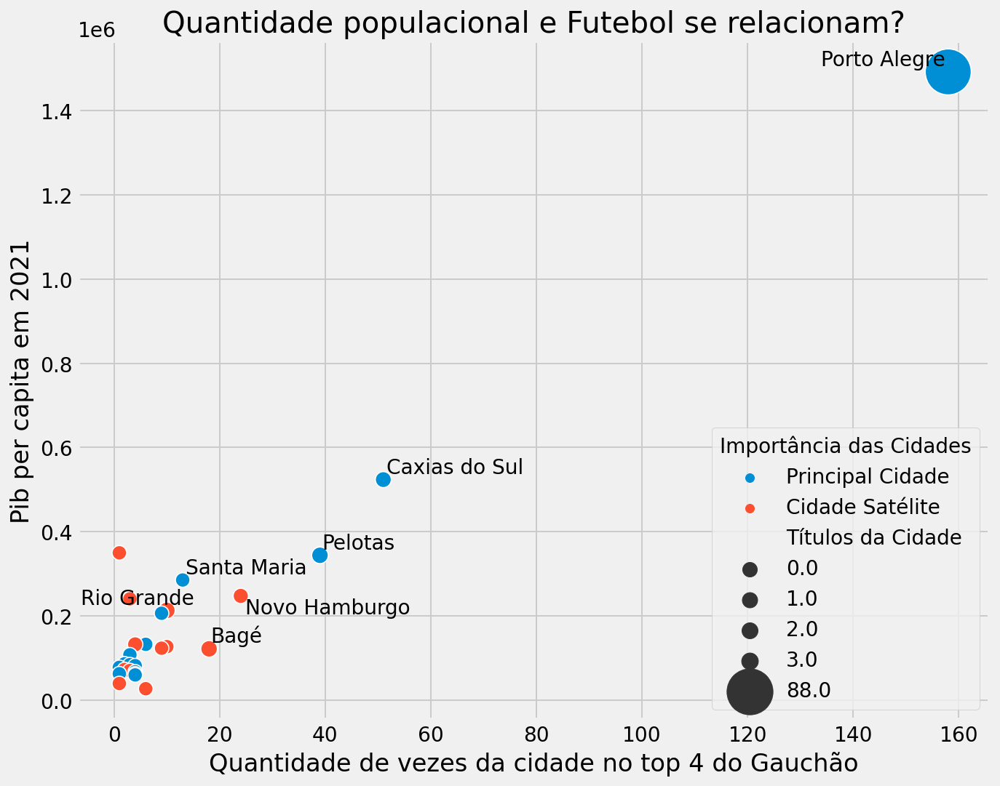

Multiverso GreNal
Vítor Pereira
Sumário
- Ideias
- Coleta, Tratamento e Análise dos dados
- Motivação
- Visualização dos Dados
- O que é o Multiverso?
- Visualização dos dados
- Prelúdio para o Trabalho 2
- Opiniões sobre Python
Ideias
- Utilizar Python;
- Realizar tratamendo dos dataframes;
- Web Scraping
- Utilizar análise no STATufsm
Coleta de dados
Principais:
Secundários:
Etapas e principal dificuldade
- Coleta dos dados (Web Scraping):
- Acentos.
- Tratamentos dos dados:
- Acentos1.
- Análise dos dados:
- Visualização dos dados no python.
ggplot2 >>>>>> matplotlib & seaborn
Porcentagem de tempo gasto em cada etapa
fig, ax = plt.subplots(figsize=(8, 7))
ax.set_aspect('equal')
tempo = [15,60,5,20]
wedges, texts, percs = ax.pie(tempo, labels=['Coleta', 'Tratamento',
'Análise', 'Visualização'], autopct="%1.1f%%")
groups = [[0],[1],[2,3]]
radfraction = 0.1
for group in groups:
ang = np.deg2rad((wedges[group[-1]].theta2 + wedges[group[0]].theta1) / 2)
for j in group:
center = radfraction * wedges[j].r * np.array([np.cos(ang),
np.sin(ang)])
wedges[j].set_center(center)
texts[j].set_position(np.array(texts[j].get_position()) + center)
percs[j].set_position(np.array(percs[j].get_position()) + center)
ax.autoscale(True)Apresentação dos bancos
| Ano | Primeiro | Segundo | Artilheiro | N_de_gols | Cidade_Primeiro | Cidade_Segundo |
|---|---|---|---|---|---|---|
| 1919 | Brasil de Pelotas | Grêmio | ProençaBrasil de Pelotas | 3 | Pelotas | Porto Alegre |
| 1920 | Guarany de Bagé | Grêmio | GreccoGuarany de Bagé | 2 | Bagé | Porto Alegre |
| 1921 | Grêmio | Riograndense-SM | MosquitoRiograndense | 3 | Porto Alegre | Santa Maria |
| 1922 | Grêmio | Guarani de Alegrete | LagartoGrêmio | 5 | Porto Alegre | Alegrete |
| 1925 | Bagé | Grêmio | PascoalitoBagé | <NA> | Bagé | Porto Alegre |
| 1926 | Grêmio | Guarany de Bagé | CoróGrêmio | <NA> | Porto Alegre | Bagé |
| 1927 | Internacional | Bagé | BarrosInternacional | <NA> | Porto Alegre | Bagé |
| 1928 | Americano | Bagé | JoãozinhoAmericano-RS | <NA> | Porto Alegre | Bagé |
| Apelido | Nome | Cidade | Fundacao |
|---|---|---|---|
| Três Passos | Três Passos Atlético Clube | Três Passos | 1966-02-09 |
| Tupi | Tupi Futebol Clube | Crissiumal | 1949-05-01 |
| Universal | Sport Club Universal | Uruguaiana | 1925-01-01 |
| União Frederiquense | União Frederiquense de Futebol | Frederico Westphalen | 2010-08-03 |
| União Harmonia | União Harmonia Futebol Clube | Canoas | 1954-05-23 |
| Uruguaiana | Esporte Clube Uruguaiana | Uruguaiana | 1912-05-19 |
| Veranópolis | Veranópolis Esporte Clube Recreativo e Cultural | Veranópolis | 1992-01-15 |
| Veronese | Grêmio Esportivo Veronese | Canoas | 1942-05-01 |
| Veterano | Veterano Futebol Clube | Carazinho | 1933-10-25 |
| Ypiranga | Ypiranga Futebol Clube | Erechim | 1924-08-18 |
| Cidade | Populacao_2021 | Microrregioes | Mesorregioes | PIB_2019 | PIB_per_capita_2019 | IDH_2010 |
|---|---|---|---|---|---|---|
| Porto Alegre | 1492530 | Porto Alegre | Metropolitana | 82431477.59 | 55555.39 | 0.805 |
| Caxias do Sul | 523716 | Caxias do Sul | Nordeste | 27013569.55 | 52873.85 | 0.782 |
| Canoas | 349728 | Porto Alegre | Metropolitana | 20630280.14 | 59519.12 | 0.750 |
| Pelotas | 343826 | Pelotas | Sudeste | 9445912.82 | 27586.96 | 0.739 |
| Gravataí | 285564 | Porto Alegre | Metropolitana | 12396458.37 | 44034.18 | 0.736 |
| Santa Maria | 285159 | Santa Maria | Centro Ocidental | 8766854.55 | 31074.58 | 0.784 |
| Viamão | 257330 | Porto Alegre | Metropolitana | 4040356.74 | 15830.63 | 0.717 |
| Novo Hamburgo | 247303 | Porto Alegre | Metropolitana | 9769394.05 | 39592.60 | 0.747 |
# <style>
# table.dataframe {
# font-size:50%;
# }
</style>
campeonatos.head(8).to_html(index=False,columns=['Ano', 'Primeiro',
'Segundo',
'Artilheiro', 'N_de_gols',
'Cidade_Primeiro',
'Cidade_Segundo'])
times.tail(10).to_html(index = False)
cidades.head(8).to_html(index = False, columns=['Cidade', 'Populacao_2021',
'Microrregioes',
'Mesorregioes',
'PIB_2019',
'PIB_per_capita_2019',
'IDH_2010'])Entendo as variáveis do banco
| Variáveis | Tipos | Quantidade NA | |
|---|---|---|---|
| 0 | Edicao | uint8 | 0 |
| 1 | Ano | uint16 | 0 |
| 2 | Primeiro | category | 0 |
| 3 | Segundo | category | 0 |
| 4 | Terceiro | category | 1 |
| 5 | Quarto | category | 5 |
| 6 | Artilheiro | object | 0 |
| 7 | N_de_gols | Int8 | 25 |
| 8 | Cidade_Primeiro | category | 0 |
| 9 | Cidade_Segundo | category | 0 |
| 10 | Cidade_Terceiro | category | 1 |
| 11 | Cidade_Quarto | category | 5 |
| Apelido | Nome | Cidade | Fundacao | |
|---|---|---|---|---|
| count | 109 | 109 | 109 | 106 |
| unique | 108 | 103 | 59 | 105 |
| top | São Gabriel | Guarany Futebol Clube | Porto Alegre | 1944-01-06 00:00:00 |
| freq | 2 | 3 | 7 | 2 |
| first | NaN | NaN | NaN | 1900-07-19 00:00:00 |
| last | NaN | NaN | NaN | 2013-09-23 00:00:00 |
| Variáveis | Tipos | |
|---|---|---|
| 0 | Apelido | 0 |
| 1 | Nome | 0 |
| 2 | Cidade | 0 |
| 3 | Fundacao | 3 |
| Cidade | Populacao_2010 | Populacao_2021 | Microrregioes | Mesorregioes | PIB_2010 | PIB_2019 | PIB_per_capita_2010 | PIB_per_capita_2019 | IDH_1991 | IDH_2000 | IDH_2010 | |
|---|---|---|---|---|---|---|---|---|---|---|---|---|
| count | 497 | 4.960000e+02 | 4.970000e+02 | 497 | 497 | 4.960000e+02 | 4.970000e+02 | 496.000000 | 497.000000 | 496.000000 | 496.000000 | 496.000000 |
| unique | 497 | NaN | NaN | 36 | 7 | NaN | NaN | NaN | NaN | NaN | NaN | NaN |
| top | Aceguá | NaN | NaN | Erechim | Noroeste | NaN | NaN | NaN | NaN | NaN | NaN | NaN |
| freq | 1 | NaN | NaN | 30 | 216 | NaN | NaN | NaN | NaN | NaN | NaN | NaN |
| mean | NaN | 2.166621e+04 | 2.307164e+04 | NaN | NaN | 4.863894e+05 | 9.707529e+05 | 19072.483629 | 39324.170282 | 0.460952 | 0.605192 | 0.713530 |
| std | NaN | 7.739846e+04 | 8.136028e+04 | NaN | NaN | 2.249482e+06 | 4.239813e+06 | 15923.305918 | 22243.435241 | 0.070237 | 0.058216 | 0.041226 |
| min | NaN | 1.216000e+03 | 9.320000e+02 | NaN | NaN | 1.671200e+04 | 3.447315e+04 | 6550.230000 | 13520.930000 | 0.233000 | 0.441000 | 0.587000 |
| 25% | NaN | 2.963750e+03 | 2.950000e+03 | NaN | NaN | 4.661550e+04 | 1.013178e+05 | 11930.932500 | 25823.790000 | 0.410000 | 0.562000 | 0.685000 |
| 50% | NaN | 5.686000e+03 | 5.573000e+03 | NaN | NaN | 8.834550e+04 | 2.015164e+05 | 15633.410000 | 33757.460000 | 0.467500 | 0.609000 | 0.717000 |
| 75% | NaN | 1.430825e+04 | 1.559400e+04 | NaN | NaN | 2.581632e+05 | 5.506154e+05 | 21230.135000 | 47132.690000 | 0.512000 | 0.653000 | 0.746000 |
| max | NaN | 1.450555e+06 | 1.492530e+06 | NaN | NaN | 4.272499e+07 | 8.243148e+07 | 219694.740000 | 283449.620000 | 0.660000 | 0.744000 | 0.805000 |
campeonatos.dtypes.to_frame().reset_index(level=0).\
rename(columns={'index' : 'Variáveis', 0 : 'Tipos'}).\
merge(campeonatos.isnull().sum().to_frame().reset_index(level=0).\
rename(columns={'index' : 'Variáveis_l', 0 : 'Quantidade NA'}),
how ='left',
left_on='Variáveis', right_on='Variáveis_l').\
drop(columns=['Variáveis_l'])
times.describe(include='all')
times.isnull().sum().to_frame().reset_index(level=0).\
rename(columns={'index' : 'Variáveis', 0 : 'Tipos'})
cidades.describe(include='all')Motivação
Dupla greNAL vs Outros Times
with plt.style.context('bmh'):
fig, ax = plt.subplots(figsize=(8, 6))
sns.barplot(ax = ax, data=campeonatos['Primeiro'].\
map({'Grêmio': 'GreNAL', 'Internacional' : 'GreNAL'}).\
fillna('Outros').to_frame().groupby(by='Primeiro').\
size().to_frame().reset_index().\
rename(columns={0:'Titulos'}),
order =['Outros', 'GreNAL'],
x='Primeiro', y='Titulos',
estimator=lambda x: max(x)/ sum(campeonatos['Primeiro'].\
map({'Grêmio': 'GreNAL', 'Internacional' : 'GreNAL'}).\
fillna('Outros').to_frame().groupby(by='Primeiro').\
size().to_frame().reset_index().\
rename(columns={0:'Titulos'})['Titulos'])
* 100)
ax.bar_label(ax.containers[0], fmt='%.2f%%' )
ax.set_xlabel('Quantidade de títulos')
ax.set_ylabel('Agrupamento de times')
ax.set_title('Comparação dos títulos gaúchos da dupla \
GreNal com os outros times')
ax.yaxis.set_major_formatter(formatter)
plt.show()Visualização dos dados
def normal_count(data,y,xlabel,ylabel,title, h = 8, w = 6):
with plt.style.context('fivethirtyeight'):
fig, ax = plt.subplots(figsize=(h, w))
sns.countplot(ax = ax, data=data, y=y, order = data[y].value_counts().index)
ax.bar_label(ax.containers[0])
ax.set_xlabel(xlabel)
ax.set_ylabel(ylabel)
ax.set_title(title)
return plt.show()
normal_count(campeonatos, 'Primeiro', 'Número de títulos', 'Campeões', 'Títulos por times', w = 5)Por que “Multiverso”?
Perguntas a serem respondidas
- Quem seriam os principais times?
- Quais seriam as principais cidades?
- O polo de futebol, sairia da região metropolitana?
- Quais covariáveis influenciam no crescimento de um time de futebol?
- Quais os principais clássicos?


O principal clássico com certeza seria Taqua-a-Taqua
Taquarense vs Taquariense


Criando o Multiverso
- Apenas defini Inter e Grêmio como extintos e substituí pelos times que viriam em posições inferiores e mantive os campeões que não foram da dupla, assim o banco ficou:
| Primeiro | Segundo | Terceiro | Quarto |
|---|---|---|---|
| extinto | Brasil de Pelotas | São José | Avenida |
| extinto | extinto | Caxias | São Luiz |
| extinto | Caxias | extinto | Esportivo |
| extinto | extinto | Juventude | Caxias |
| extinto | Ypiranga | extinto | Brasil de Pelotas |
multiverso_campeonatos = campeonatos.iloc[:, 0:6]
multiverso_campeonatos['Primeiro'] = multiverso_campeonatos['Primeiro'].\
map({'Internacional' : 'extinto','Grêmio' : 'extinto'}).\
fillna(multiverso_campeonatos['Primeiro'])
multiverso_campeonatos['Segundo'] = multiverso_campeonatos['Segundo'].\
map({'Internacional' : 'extinto','Grêmio' : 'extinto'}).\
fillna(multiverso_campeonatos['Segundo'])
multiverso_campeonatos['Terceiro'] = multiverso_campeonatos['Terceiro'].\
map({'Internacional' : 'extinto','Grêmio' : 'extinto'}).\
fillna(multiverso_campeonatos['Terceiro'])
multiverso_campeonatos['Quarto'] = multiverso_campeonatos['Quarto'].\
map({'Internacional' : 'extinto','Grêmio' : 'extinto'}).\
fillna(multiverso_campeonatos['Quarto'])
multiverso_campeonatos.tail(5).to_html(index=False,
columns=['Primeiro', 'Segundo',
'Terceiro', 'Quarto'])Criando o Multiverso
| Primeiro | Segundo | Cidade_Primeiro | Cidade_Segundo |
|---|---|---|---|
| Brasil de Pelotas | São José | Pelotas | Porto Alegre |
| Caxias | São Luiz | Caxias do Sul | Ijuí |
| Caxias | Esportivo | Caxias do Sul | Bento Gonçalves |
| Juventude | Caxias | Caxias do Sul | Caxias do Sul |
| Ypiranga | Brasil de Pelotas | Erechim | Pelotas |
for index,rows in multiverso_campeonatos.iterrows():
#for i in rows:
if(multiverso_campeonatos.iloc[index,2] == 'extinto'):
multiverso_campeonatos.iloc[index,2] = multiverso_campeonatos.iloc[index,3]
multiverso_campeonatos.iloc[index,3] = multiverso_campeonatos.iloc[index,4]
multiverso_campeonatos.iloc[index,4] = multiverso_campeonatos.iloc[index,5]
multiverso_campeonatos.iloc[index,5] = None
if(multiverso_campeonatos.iloc[index,2] == 'extinto'):
multiverso_campeonatos.iloc[index,2] = multiverso_campeonatos.iloc[index,3]
multiverso_campeonatos.iloc[index,3] = multiverso_campeonatos.iloc[index,4]
multiverso_campeonatos.iloc[index,4] = multiverso_campeonatos.iloc[index,5]
multiverso_campeonatos.iloc[index,5] = None
if(multiverso_campeonatos.iloc[index,3] == 'extinto'):
multiverso_campeonatos.iloc[index,3] = multiverso_campeonatos.iloc[index,4]
multiverso_campeonatos.iloc[index,4] = multiverso_campeonatos.iloc[index,5]
multiverso_campeonatos.iloc[index,5] = None
if(multiverso_campeonatos.iloc[index,3] == 'extinto'):
multiverso_campeonatos.iloc[index,3] = multiverso_campeonatos.iloc[index,4]
multiverso_campeonatos.iloc[index,4] = multiverso_campeonatos.iloc[index,5]
multiverso_campeonatos.iloc[index,5] = None
if(multiverso_campeonatos.iloc[index,4] == 'extinto'):
multiverso_campeonatos.iloc[index,4] = multiverso_campeonatos.iloc[index,5]
multiverso_campeonatos.iloc[index,5] = None
if(multiverso_campeonatos.iloc[index,4] == 'extinto'):
multiverso_campeonatos.iloc[index,4] = multiverso_campeonatos.iloc[index,5]
multiverso_campeonatos.iloc[index,5] = None
if(multiverso_campeonatos.iloc[index,5] == 'extinto'):
multiverso_campeonatos.iloc[index,5] = None
multiverso_campeonatos = multiverso_campeonatos.\
merge(times, how='left', left_on='Primeiro', right_on = "Apelido").\
drop(columns=['Apelido', 'Nome', 'Fundacao']).\
rename(columns={"Cidade": "Cidade_Primeiro"}) .\
merge(times, how='left', left_on='Segundo', right_on = "Apelido").\
drop(columns=['Apelido', 'Nome', 'Fundacao']).\
rename(columns={"Cidade": "Cidade_Segundo"}) .\
merge(times, how='left', left_on='Terceiro', right_on = "Apelido").\
drop(columns=['Apelido', 'Nome', 'Fundacao']).\
rename(columns={"Cidade": "Cidade_Terceiro"}) .\
merge(times, how='left', left_on='Quarto', right_on = "Apelido").\
drop(columns=['Apelido', 'Nome', 'Fundacao']).\
rename(columns={"Cidade": "Cidade_Quarto"})
multiverso_campeonatos.tail(5).to_html(index=False,
columns=['Primeiro', 'Segundo',
'Cidade_Primeiro', 'Cidade_Segundo'])Entendo as variáveis do banco
| Primeiro | Segundo | Terceiro | Quarto | Cidade_Primeiro | Cidade_Segundo | Cidade_Terceiro | |
|---|---|---|---|---|---|---|---|
| count | 102 | 101 | 43 | 5 | 102 | 101 | 43 |
| unique | 27 | 35 | 25 | 5 | 19 | 23 | 13 |
| top | Juventude | Caxias | Uruguaiana | Guarany de Rosário | Caxias do Sul | Caxias do Sul | Uruguaiana |
| freq | 17 | 11 | 4 | 1 | 29 | 19 | 7 |
| Variáveis | Quantidade de NA | |
|---|---|---|
| 0 | Edicao | 0 |
| 1 | Ano | 0 |
| 2 | Primeiro | 0 |
| 3 | Segundo | 1 |
| 4 | Terceiro | 59 |
| 5 | Quarto | 97 |
| 6 | Cidade_Primeiro | 0 |
| 7 | Cidade_Segundo | 1 |
| 8 | Cidade_Terceiro | 59 |
| 9 | Cidade_Quarto | 97 |
Visualização dos dados


def multiverso_count(data,y,xlabel,ylabel,title, h = 8, w = 6):
with plt.xkcd():
fig, ax = plt.subplots(figsize=(h, w))
ax = sns.countplot(ax = ax,data=data, y=y, order = data[y].value_counts().index)
ax.bar_label(ax.containers[0])
ax.set_xlabel(xlabel)
ax.set_ylabel(ylabel)
ax.set_title(title)
return plt.show()O que interfere no sucesso dos times?
As cidades onde estão?
Prelúdio para o trabalho 2
| Cidade | Populacao_2010 | Populacao_2021 | Microrregioes | Mesorregioes | PIB_2010 | PIB_2019 | PIB_per_capita_2010 | PIB_per_capita_2019 | IDH_1991 | IDH_2000 | IDH_2010 | Vezes_top_4 | Quantidade_Segundo | Quantidade_Primeiro | Principal_Micro | Vezes_top_4_Multiverso | Quantidade_Segundo_Multiverso | Quantidade_Primeiro_Multiverso | |
|---|---|---|---|---|---|---|---|---|---|---|---|---|---|---|---|---|---|---|---|
| 0 | Porto Alegre | 1450555.0 | 1492530 | Porto Alegre | Metropolitana | 42724992.0 | 82431477.59 | 30302.72 | 55555.39 | 0.660 | 0.744 | 0.805 | 158.0 | 50.0 | 88.0 | Principal Cidade | 7.0 | 4.0 | 2.0 |
| 1 | Caxias do Sul | 437889.0 | 523716 | Caxias do Sul | Nordeste | 16471201.0 | 27013569.55 | 37822.92 | 52873.85 | 0.594 | 0.705 | 0.782 | 51.0 | 10.0 | 2.0 | Principal Cidade | 51.0 | 19.0 | 29.0 |
| 2 | Canoas | 323827.0 | 349728 | Porto Alegre | Metropolitana | 12718014.0 | 20630280.14 | 39250.10 | 59519.12 | 0.556 | 0.665 | 0.750 | 1.0 | 1.0 | 0.0 | Cidade Satélite | 1.0 | 0.0 | 1.0 |
| 3 | Pelotas | 328275.0 | 343826 | Pelotas | Sudeste | 4227940.0 | 9445912.82 | 12898.79 | 27586.96 | 0.558 | 0.660 | 0.739 | 39.0 | 12.0 | 3.0 | Principal Cidade | 39.0 | 13.0 | 21.0 |
| 4 | Gravataí | 255660.0 | 285564 | Porto Alegre | Metropolitana | 7295813.0 | 12396458.37 | 28525.79 | 44034.18 | 0.540 | 0.661 | 0.736 | 0.0 | 0.0 | 0.0 | Cidade Satélite | 0.0 | 0.0 | 0.0 |
| 5 | Santa Maria | 268450.0 | 285159 | Santa Maria | Centro Ocidental | 4006384.0 | 8766854.55 | 15348.54 | 31074.58 | 0.609 | 0.715 | 0.784 | 13.0 | 1.0 | 0.0 | Principal Cidade | 13.0 | 5.0 | 4.0 |
Criação de uma variável categória
| Cidade | Microrregioes | Mesorregioes | Principal_Micro |
|---|---|---|---|
| Porto Alegre | Porto Alegre | Metropolitana | Principal Cidade |
| Caxias do Sul | Caxias do Sul | Nordeste | Principal Cidade |
| Canoas | Porto Alegre | Metropolitana | Cidade Satélite |
| Pelotas | Pelotas | Sudeste | Principal Cidade |
| Gravataí | Porto Alegre | Metropolitana | Cidade Satélite |
| Santa Maria | Santa Maria | Centro Ocidental | Principal Cidade |
Visualização dos dados


Opiniões sobre Python
- Tidyverse > Pandas;
- GGplot2 >>>>>>>>>>>>>>> Seaborn >>> Matplotlib;
- Tratamento de strings do Python > R;
- Velocidade de execução Python > R;
- Quarto > Xaringan.